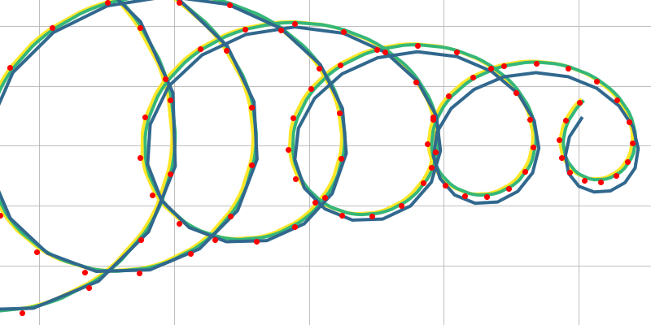
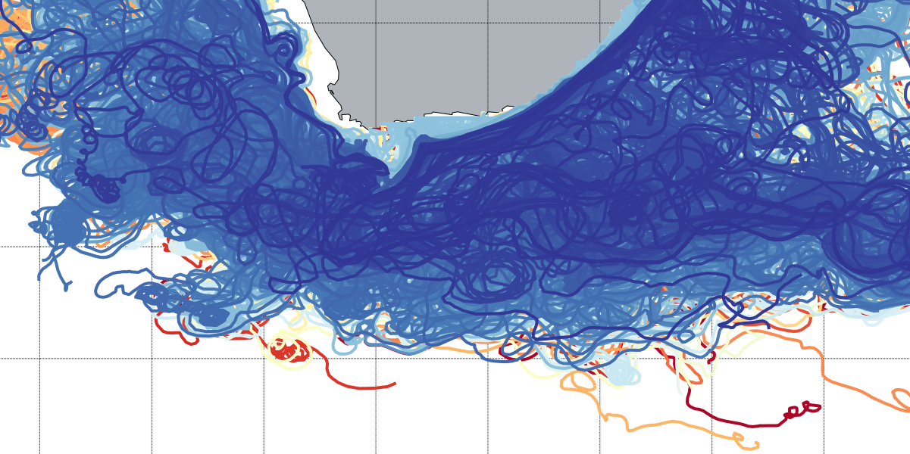
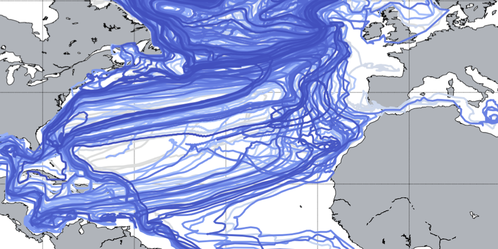
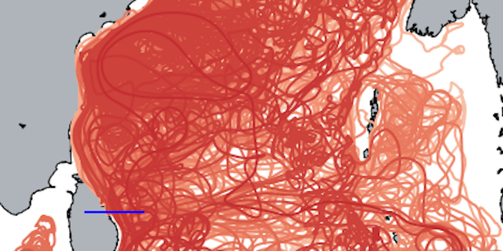
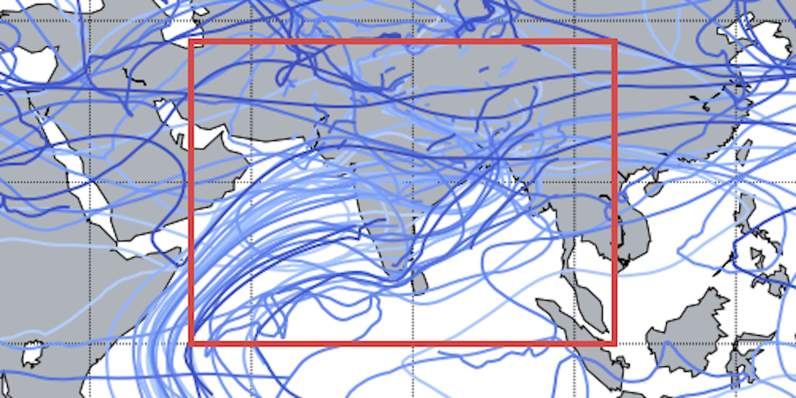

Example gallery
Video and Image galleries of different results computed with TRACMASS
Video Gallery
Some trajectory examples computed using TRACMASS
Conveyor belt
Particles in the Agulhas current system.
Image gallery
Includes examples of different TRACMASS features

Theoretical case
The theoretical is the default project of TRACMASS and describes the flow on a spatial homogeneous and time dependent two dimensional velocity field.

AVISO (satellite altimetry data)
The AVISO data is stored on a Arakawa’s B-grid while TRACMASS is defined on a Arakawa’s C-grid. Therefore, both zonal and meridional fluxes are computed interpolating the velocity fields on the TRACMASS grid. This is done on the read_field subroutine.

NEMO
The NEMO data is defined on the same grid as the TRACMASS grid. Therefore, there is no need to interpolate velocities or tracer on the TRACMASS grid.

ROMS
The ROMS data is defined on the same grid as the TRACMASS grid. Therefore, there is no need to interpolate velocities or tracer on the TRACMASS grid. However, ghosts u and v points are defined around the frame to adjust to the TRACMASS grid.

IFS-ECMWF
The IFS data is stored on a Arakawa’s A-grid while TRACMASS is defined on a Arakawa’s C-grid. Therefore, both zonal and meridional fluxes are computed interpolating the velocity fields on the TRACMASS grid. This is done on the read_field subroutine.